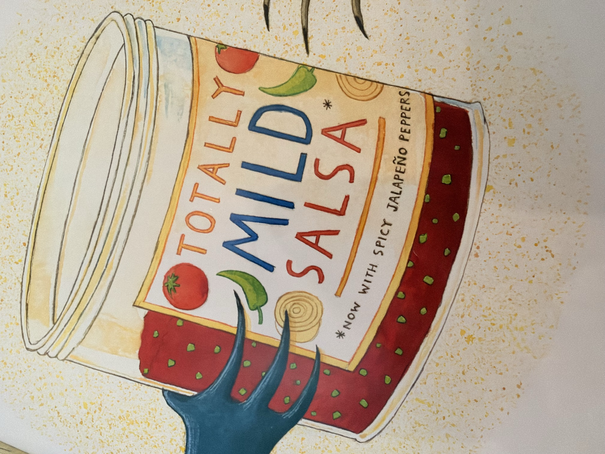

Sunglasses, With Paperwork
FSA eligibility, letters of medical necessity, and who is actually allowed to sign one · Aug 29, 2026 · comprehensive analysis + Boz voiceover
🔊 Listen: Boz explains it all (~3 min)
Site map: 12 LMN form letters · Provider/telehealth kit · Cataract prevention pitch book · FSA pathway · Eyezen OTC concept
The one-paragraph answer
Prescription sunglasses are eligible under IRS Pub 502 — typically no letter needed, subject to your plan's terms and administrator. Non-prescription sunglasses are not eligible, because UV protection alone is "wellness," not medicine. The bridge between the two is a Letter of Medical Necessity (LMN) from a licensed provider who can legally diagnose you — an optometrist or ophthalmologist, never an optician — stating the condition (photophobia, migraine, post-cataract recovery, retinal disease) and that UV/tinted lenses treat it. Administrator approval is discretionary, so call before you buy.
Who can sign an LMN
✅ Can sign: MD/DO ophthalmologists · optometrists (ODs — state-licensed to diagnose and treat eye disease) · nurse practitioners · low-vision specialists (MD or OD).
❌ Cannot sign: opticians — they dispense and fit lenses but have no diagnostic license. Their letters get rejected. Telehealth LMN services (~$25–35, 24–48h) use licensed physicians/NPs, which is what makes them valid.
Conditions that justify UV-filter/tinted lenses
Photophobia and migraine light sensitivity · post-cataract surgery UV protection · retinal conditions (retinitis pigmentosa, macular degeneration) · keratoconus. Products routinely seen in claims: FL-41 tint (Rx versions routinely FSA-paid), Drivewear/transitions in prescription form, post-op dark lenses.
The playbook (cheapest → fanciest)
- Have an Rx? Order prescription sunglasses or FL-41 Rx (Zenni, 39DollarGlasses, Warby Parker) with your FSA card. No LMN needed. Done.
- Have an eye condition? Ask your OD/ophthalmologist for an LMN — patient portals count. Free.
- No provider relationship? Telehealth LMN: Truemed, FSA Store's LMN-at-checkout, Flex/Withflex, Dr. B, Klarity — ~$25–35, 24–48 hours.
- Always call your administrator first. LMN approval for non-Rx sunglasses is discretionary — a rejection after purchase is a lost claim.
What to submit
Itemized receipt + LMN together, with provider NPI/license, signature, date, condition, treatment rationale, and duration. Expect scrutiny — sunglasses are the classic dual-use item.
Boz's take
The tax code doesn't do prevention — it does treatment, with paperwork. UV protection is free-market territory; photophobia is a medical condition. Same pair of glasses. The difference is one form, one signature, and knowing which human is allowed to sign it.
Provider-ready LMN form letters
Five panel-reviewed, citation-backed LMN templates (photophobia/migraine, post-cataract, retinal disease, ocular surface disease, age-40+ lens changes): letters.html
For providers: compliant telehealth LMN service kit
The legal deep-dive — how to run a legitimate low-cost telehealth LMN service, the laws and precedent that define the line (Hageseth, 18 U.S.C. §1347, B&P §2290.5), and why "sign for anyone" is fraud, not a loophole: provider-kit.html
Cataract prevention & the business playbook
The UV→cataract evidence base (~20% of cataract blindness sun-linked), the market math, and the expanded Truemed-style pitch book for the UV-eyewear LMN vertical: pitchbook.html
Eyezen — the OTC auto-fulfill angle
The loophole that isn't a loophole: over-the-counter reading glasses are on the FSA Store eligibility list — no prescription, no LMN (subject to plan terms) — the only prescription-free glasses that qualify, because they correct vision (FSA Store eligibility list; Foster Grant, Warby Parker, Glasses.com all confirm). Add UV400 tint and you get sun-readers: presbyopia correction + cataract-prevention optics, auto-fulfillable, zero clinical gatekeeper.
The concept: a readers line (+0.50 to +3.00 in quarter steps) in three SKUs: clear readers, gray-tint UV400 sun-readers, amber/FL-41-style sun-readers. All FSA/HSA-card-payable at checkout. Upsell path: customers whose light sensitivity is real get routed to the variant L LMN for higher-category prescription tints — the OTC SKU is both product and funnel. Fulfillment is pure dropship (Foster Grant/Peepers-class OEM, or white-label from reading-glass OEMs; Amazon already lists FSA-eligible readers).
⚠️ Name conflict: "Eyezen" is an existing Essilor lens-brand trademark (their enhanced readers line). Using it invites a C&D from the world's biggest lens maker. Workable alternatives that keep the vibe: EyeZone, ZenEye, Eyekai, Lucid Readers — or just run it as a sub-brand of an existing shell. Ray's call.
⚠️ Name conflict: "Eyezen" is an existing Essilor lens-brand trademark (their enhanced readers line). Using it invites a C&D from the world's biggest lens maker. Workable alternatives that keep the vibe: EyeZone, ZenEye, Eyekai, Lucid Readers — or just run it as a sub-brand of an existing shell. Ray's call.
⚠️ JC Caveats — the label warnings

Every jar on this site comes with these warnings:
- "Eligible" ≠ "approved." Pub 502 defines the categories; your plan administrator holds the veto. Same jar, different verdicts by TPA.
- Tinted plano glasses need the letter. Readers correct — eligible. Plano tints treat nothing on paper — LMN or denied. That's the mild/spicy line.
- The LMN must be true. A letter certifying a condition nobody diagnosed is §1347 with better fonts. Evaluation first, purchase second.
- UV400 claims must be real. ANSI Z80.3 / ISO 12312-1 test reports behind every "blocks 100% UV" claim, or don't print it.
- "Guaranteed approval" is the FTC's favorite flavor. We never say it.
Illustration: "Totally Mild Salsa — Now with Spicy Jalapeño Peppers" — official mascot of contradictory product claims.
Sources
- IRS Publication 502 — "eyeglasses needed for medical reasons"
- FSA Store: non-Rx sunglasses eligibility
- FSA Store: LMN requirements
- U of U Moran Eye Center: FL-41 lenses
- Truemed and other 2026 telehealth LMN services
Certainty notes: Rx sunglasses eligible and opticians-can't-sign are certain. Whether any given administrator accepts an LMN for non-Rx sunglasses is discretionary — Pub 502 never names sunglasses. Voice: VoxCPM2 clone of a satirical Boz character; not actually Andrew Bosworth.